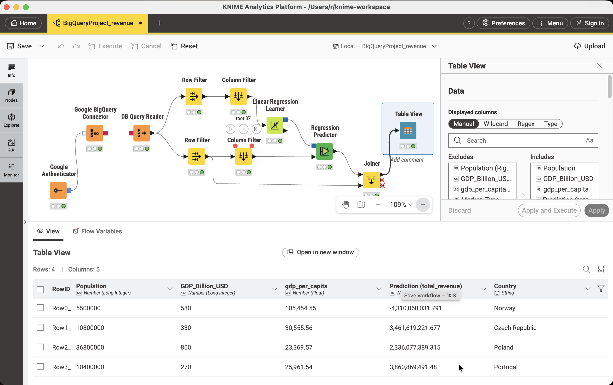

The Problem
Where should the company expand next?
The company operates in 21 European and global markets. Four candidate markets have been identified — Norway, Czech Republic, Poland, and Portugal — and the question is: how much revenue can we realistically expect from each?
The dataset combines internal sales data from BigQuery (go_explore_project.daily_sales joined to retailers) with external macroeconomic indicators: GDP in EUR billions and population in millions.

| Country | Population (M) | GDP (B EUR) | GDP per capita | Market |
|---|---|---|---|---|
| Norway | 5.5 | 580 | 105,454 | Target |
| Czech Republic | 10.8 | 330 | 30,556 | Target |
| Poland | 36.8 | 860 | 23,370 | Target |
| Portugal | 10.4 | 270 | 25,962 | Target |
| Sweden | 10.5 | 590 | 56,190 | Existing |
| Germany | 84.0 | 4,500 | 53,571 | Existing |
| Denmark | 5.9 | 400 | 67,797 | Existing |
The fix was to expand the training set to 21 countries and move to Python with statsmodels for proper statistical testing.
Iteration Detail
Why four model versions were needed
v1 — Level OLS: R² of 0.81 looked impressive but the Durbin-Watson of 0.664 revealed severe positive autocorrelation — residuals were not independent. The condition number of 922 also flagged multicollinearity between GDP and population (both large for large countries).
v2 — HAC correction: Newey-West standard errors with maxlags=1 corrected the standard error inflation from autocorrelation, making the significance tests trustworthy. GDP (p=0.025) and population (p=0.002) became clearly significant. But the store count coefficient was negative — counterintuitive.
ols_model = sm.OLS(y_train, X_train_sm).fit(
cov_type='HAC',
cov_kwds={'maxlags': 1} # Newey-West with 1 lag
)
v3 — Per-capita transformation: Converting all variables to per-capita (dividing by population in millions) reduced multicollinearity — Condition Number dropped. DW improved to 1.425. But store_per_capita remained negative and highly significant (p=0.002), suggesting a real economic effect rather than a data artifact.
v4 — Log-Log transformation: Taking the natural log of all variables and the target linearises the multiplicative relationship between economic scale and revenue. This is standard practice in cross-country economic analysis. Condition Number dropped to 32.6. Both predictors remained significant. R² fell from 0.81 to 0.35 — but this is not a regression: the level model was fitting scale, not economic relationships.
Final Model
Log-Log OLS with HAC standard errors
# Feature engineering
df['gdp_per_capita'] = df['GDP_EUR_billion'] / df['population_million']
df['store_per_capita'] = df['total_active_stores'] / df['population_million']
# Log-transform everything
X_train_log = np.log(train[['gdp_per_capita', 'store_per_capita']])
y_train_log = np.log(train['total_revenue'])
# OLS with HAC-robust standard errors
X_sm = sm.add_constant(X_train_log)
ols_model = sm.OLS(y_train_log, X_sm).fit(
cov_type='HAC', cov_kwds={'maxlags': 1}
)
# Predict → convert back from log space
log_preds = ols_model.predict(sm.add_constant(X_test_log))
predictions = np.exp(log_preds)
The negative store_per_capita coefficient is economically meaningful, not a bug. Markets with more stores per person are more saturated — each additional store generates less marginal revenue. The sensitivity analysis confirms this: opening more stores does increase total revenue, but at a decreasing rate per store.
Assumption test results
| Assumption | Test | Result | Notes |
|---|---|---|---|
| Linearity | Residuals vs Fitted | ✅ PASS | Random scatter around zero |
| Normality | Shapiro-Wilk | ✅ PASS | p > 0.05 |
| Independence | Durbin-Watson | ⚠ PARTIAL | DW=1.195 — HAC SEs applied |
| Homoscedasticity | Breusch-Pagan | ✅ PASS | p > 0.05, constant variance |
Results
Predicted revenue — 4 new markets (1 store baseline)
Store count sensitivity
Since the test data uses 1 store as baseline, the model was re-run for scenarios of 1–10 stores to inform the expansion decision:
| Country | 1 store | 2 stores | 3 stores | 5 stores | 10 stores |
|---|---|---|---|---|---|
| 🇳🇴 Norway | 9.3M | 6.2M | 4.9M | 3.6M | 2.4M |
| 🇨🇿 Czech Rep. | 5.4M | 3.6M | 2.8M | 2.1M | 1.4M |
| 🇵🇱 Poland | 9.0M | 6.0M | 4.7M | 3.5M | 2.3M |
| 🇵🇹 Portugal | 4.7M | 3.1M | 2.4M | 1.8M | 1.2M |
Can a decision tree recommend store count instead of revenue?
The log-log OLS model answers how much revenue to expect from each new market. A natural follow-up is how many stores to open. A decision tree was tested as a second, independent method — first as a regressor, then, after it failed outright, repurposed as a classifier for store-count tiers.
First attempt: revenue regression failed
A DecisionTreeRegressor trained directly on revenue produced a textbook overfitting signature — a perfect fit on training data and no predictive power on unseen data.
Pivot: classification by store tier
Rather than predicting an exact revenue figure, the tree was repurposed to classify markets into store-count tiers — a coarser target better suited to a small sample. Existing markets were grouped (small: 5–9, medium: 10–17, large: 18+), and a constrained classifier was fit on gdp_per_capita and population_million.
from sklearn.tree import DecisionTreeClassifier
classifier = DecisionTreeClassifier(
max_depth=2,
min_samples_leaf=3,
random_state=1234
)
model = classifier.fit(X, y) # y = store_tier, fit on the 21 known markets
targets['predicted_tier'] = model.predict(targets[['gdp_per_capita', 'population_million']])
| Country | GDP per capita | Population (M) | Predicted Tier |
|---|---|---|---|
| 🇳🇴 Norway | 105,454 | 5.5 | small (5–9) |
| 🇨🇿 Czech Republic | 30,556 | 10.8 | small (5–9) |
| 🇵🇱 Poland | 23,370 | 36.8 | small (5–9) |
| 🇵🇹 Portugal | 25,962 | 10.4 | small (5–9) |
All four candidate markets land in the smallest tier — a conservative result that agrees directionally with the OLS sensitivity analysis, which also recommended a single flagship store ahead of broader rollout, given the negative store_per_capita elasticity (retail saturation).
Sensitivity testing
Before trusting this result, the tree was re-fit across a range of max_depth and min_samples_leaf settings, and across an alternative, finer-grained 4-tier binning scheme.
| Setting | Tier Scheme | Result — All 4 Targets | Stability |
|---|---|---|---|
| depth 1–3, leaf 3–5 | 3-tier (original) | small (5–9) — unchanged | Stable |
| depth 2–3, leaf 1 | 4-tier (finer) | xsmall / small — split by country | Sensitive |
| depth 2–3, leaf 2–3 | 4-tier (finer) | large (20+) — all four | Unstable |
| depth 2–3, leaf 4 | 4-tier (finer) | xsmall (5–7) — all four | Unstable |
Key Learnings
What this investigation taught
High R² is not the goal
The level model had R²=0.81 but was econometrically invalid. The log-log model's R²=0.35 is more honest and actually useful for prediction.
Autocorrelation in cross-sectional data is common
Countries are not independent observations — they share economic history, trade links, and geography. HAC standard errors (Newey-West) are standard practice for cross-country regressions.
Log-log is natural for economic scale variables
GDP and revenue span orders of magnitude across countries. A log-log model fits proportional relationships and produces elasticity coefficients — directly interpretable without unit conversion.
A negative coefficient can be the finding
The negative store_per_capita elasticity is not a flaw — it's evidence of retail saturation. It directly informs the recommendation to open single flagship stores rather than multi-store rollouts.
Document the dead ends
Showing v0 through v4 with their failure modes is more valuable portfolio content than presenting only the final answer. It demonstrates diagnostic thinking, not just tool use.
Small-sample fragility is itself a finding
The decision tree's classification flipped between the smallest and largest tier under minor hyperparameter changes when using finer tier bins. Diagnosing and reporting that instability — rather than cherry-picking a favorable run — is the more rigorous outcome.
Stack
Tools & methods used
| Tool / Method | Role |
|---|---|
| Google BigQuery | Source data — daily_sales × retailers join for training revenue |
| KNIME Analytics Platform | v0 prototype — exposed the need for more training data |
| statsmodels OLS | Primary model with HAC-robust standard errors |
| HAC / Newey-West | Autocorrelation-robust standard error correction |
| Shapiro-Wilk | Normality test on residuals |
| Durbin-Watson | Independence / autocorrelation detection |
| Breusch-Pagan | Homoscedasticity test |
| Ridge Regression (RidgeCV) | Robustness check — confirmed OLS direction |
| Python / Jupyter | Full analysis pipeline |
| Decision tree | Regression and classification model |
Resources
Additional Resources
Here you can download the Jupyter notebooks and the train and test datasets for this project:
Certificate